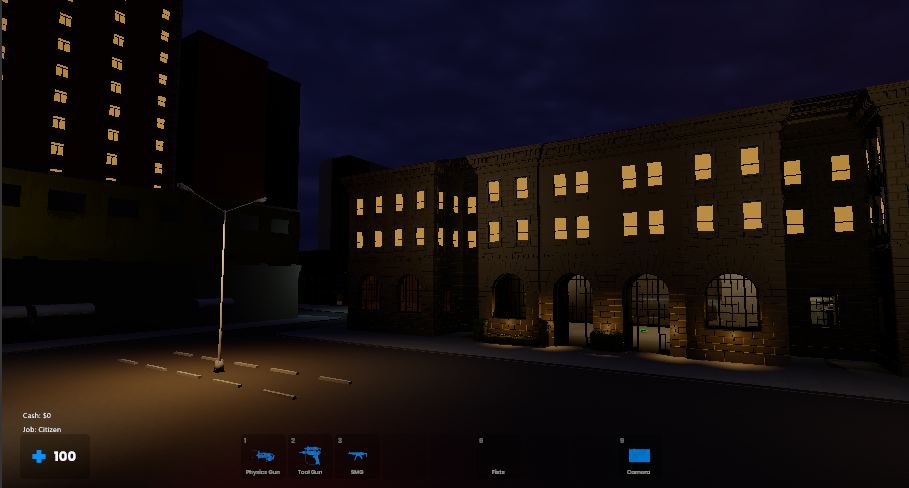
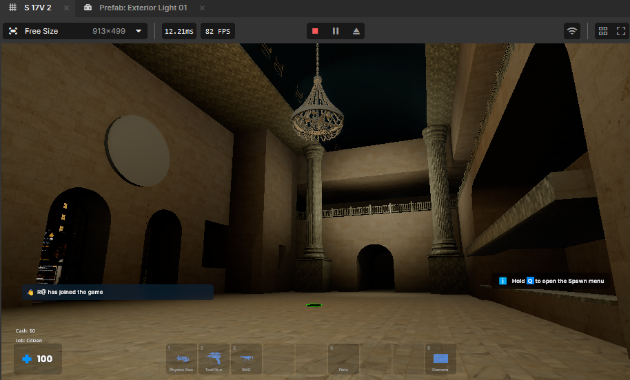

Character and Job Pressure
Civil, Government, and Criminal roles give players a legible lane, salary cadence, and reason to switch sides when the city changes.

Nightshift's DarkRP for

Server Summary
AfterDarkRP is Nightshift's custom light RP stack for s&box. The focus is not just jobs on a menu; it is a network of cash, doors, police authority, contraband, records, and terminals that players can understand in the moment.
Player / Operator View
Civil, Government, and Criminal roles give players a legible lane, salary cadence, and reason to switch sides when the city changes.
Wallets, bank persistence, payday timing, dropped cash, money printers, shipments, and purchase routes make money matter between encounters.
Single, sliding, and double-door ownership/sign handling is being wired so bases and shops can read clearly in-world.
Taze, stun, detain, release, charge, arrest, fines, and prison timing are presented as visible state instead of hidden admin magic.
Gang roles, loaded-wallet mugging, contraband entities, and high-risk cash movement give criminal jobs more to do than wait around.
HUD, pockets, ATM, player menu, crime terminal, and focused panels keep the server's systems visible without breaking the mood.

Lighting Pass

Map Flow

District Work
Community Backing
Early supporters get a visible place in the record while the server is still being shaped. No fake totals, no inflated wall of names: this board is reserved for the first real people who help keep AfterDarkRP moving.
Frontline Slot
ReservedEarly Supporter
ReservedFrontline Slot
Reserved...and the first confirmed frontline supporters once the roll opens.
Prototype Bay
The same asset is being used in the main Git repo while DarkRP for s&box gets built out.
The Road Ahead
Wallet, banking, payday, death cash, job routing, and server-visible cash movement form the baseline loop.
Taze values, sentence pacing, charge flow, fines, wanted state, and detention visibility are being balanced together.
Lighting, road flow, transit spaces, courthouse/prison routing, and tactical read are moving alongside the gameplay work.
Door ownership, base readability, contraband placement, and player-built defenses are the next pressure points.
Modern Stack
AfterDarkRP is being built as a live Nightshift light RP codebase, not a loose collection of one-off scripts. The homepage now makes that clearer for players and early supporters.